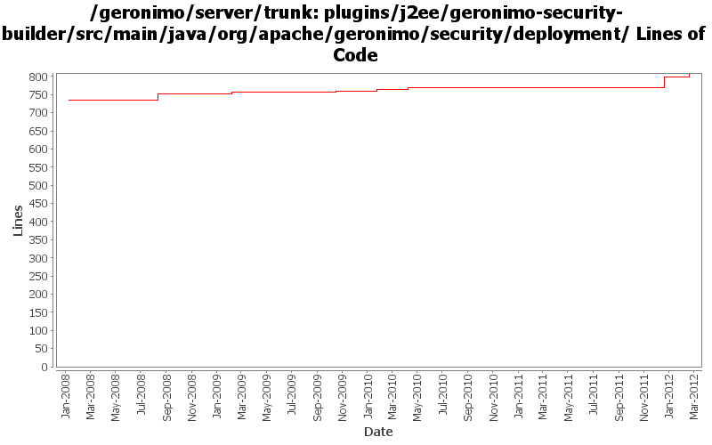

[root]/plugins/j2ee/geronimo-security-builder/src/main/java/org/apache/geronimo/security/deployment

| Author | Changes | Lines of Code | Lines per Change |
|---|---|---|---|
| Totals | 26 (100.0%) | 304 (100.0%) | 11.6 |
| djencks | 22 (84.6%) | 285 (93.8%) | 12.9 |
| xiaming | 1 (3.8%) | 13 (4.3%) | 13.0 |
| gawor | 1 (3.8%) | 3 (1.0%) | 3.0 |
| xuhaihong | 1 (3.8%) | 2 (0.7%) | 2.0 |
| rickmcguire | 1 (3.8%) | 1 (0.3%) | 1.0 |
GERONIMO-6244 Port GERONIMO-4801 fix into 3.0 trunk for JACC manager gbean already present issue
13 lines of code changed in 1 file:
GERONIMO-6240 make xml attribute and reference builders work and provide GBeanBuilder as a gbean for modules builders to use
55 lines of code changed in 2 files:
GERONIMO-5567 rewrite jetty integration to use a openejb-like info tree and the *Registration interfaces. This gets everything started in the right order and is a lot simpler. Old code still needs to be removed
2 lines of code changed in 2 files:
a. Calculate web permissions while starting the web module to support setServletSecurity feature in Servlet 3.0
b. Initial support ServletContainerInitializer, some improvements might be needed, such as use ASM ?
c. Support ORDERED_LIBS ServletContext attribute
2 lines of code changed in 1 file:
GERONIMO-5150 type safe shared data in EARContext
8 lines of code changed in 1 file:
GERONIMO-5030: Initial refactoring of some of the module deployment code to support deployment of Bundles. Also, implemented rfc66 extender that can actually deploy WABs with simple servlets and jsps.
3 lines of code changed in 1 file:
fix problem in EarConfigBuilder when constructing sub-configurations for wars. Rename DeploymentContext.getBundle to getDependencyBundle to try to make it clearer that it is temporary and not always available. Start updating pluto/console stuff for pluto 2.
1 lines of code changed in 1 file:
Change ModuleBuilderExtension.addGBeans() method to use a bundle
1 lines of code changed in 1 file:
get geronimo-security-builder to build
18 lines of code changed in 3 files:
geronimo-j2ee-builder and geronimo-naming-builder compile. There seem to be packaging problems in geronimo-j2ee
1 lines of code changed in 1 file:
GERONIMO-4531, GERONIMO-4523 Simplify builder collections. Make security principal-role mappings independent of the application
172 lines of code changed in 3 files:
GERONIMO-4258 clean up some naming constant usage
10 lines of code changed in 5 files:
GERONIMO-3149 Some gbeans to support jaspi components and a little bit of reorganization
17 lines of code changed in 1 file:
GERONIMO-3758 put the default jacc provider implementation classes in a separate package
1 lines of code changed in 1 file:
GERONIMO-3742 Split up namespace upgrades into the modules that need them
0 lines of code changed in 2 files: